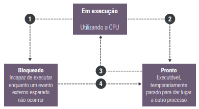

O sistema operacional é o principal software do computador. Ele é responsável por controlar o hardware e permitir que o usuário interaja com o computador por meio de aplicativos. Ele também gerencia tarefas, escalona processos, controla a memória e mantém a integridade do sistema.
Um computador é composto por diversos componentes físicos (hardware), como processador, memória, discos, teclado, monitor, impressoras, etc. Para que esses componentes funcionem corretamente e em conjunto, é necessário o uso de um sistema operacional.
Um processo é um programa em execução. Cada processo possui um espaço de memória, com instruções do programa, dados e pilha. Os processos podem estar em três estados:
O sistema operacional realiza transições entre esses estados usando o escalonador de processos, que define qual processo será executado em seguida.
O sistema operacional permite que os aplicativos acessem os recursos do hardware sem que o programador precise entender os detalhes de cada dispositivo. Isso é feito por meio de drivers – pequenos programas que comunicam o sistema com os dispositivos (como impressoras, mouses, etc.).
O sistema operacional é dividido em dois componentes principais:
| KERNEL (NÚCLEO) | SHELL (AMBIENTE OPERACIONAL) |
|---|---|
|
|
O kernel é o coração do sistema operacional, responsável por iniciar o sistema, gerenciar memória, processador e armazenamento. Já o shell é o ambiente em que o usuário interage com o sistema, seja via linha de comando ou interface gráfica.
O sistema operacional realiza cinco funções básicas:
Veja o seguinte vídeo para melhor entendimento: link
O sistema operacional é essencial para o funcionamento de qualquer computador. Ele realiza o controle dos recursos e oferece uma interface para que o usuário possa utilizar os programas de forma prática e segura. Também vimos que os componentes kernel e shell organizam suas funções e que o sistema é o responsável pelo funcionamento harmonioso entre hardware e software.
{% include nav-aula.html materia="infraestruturadeti" aula="6" %} {% include footer.html %}